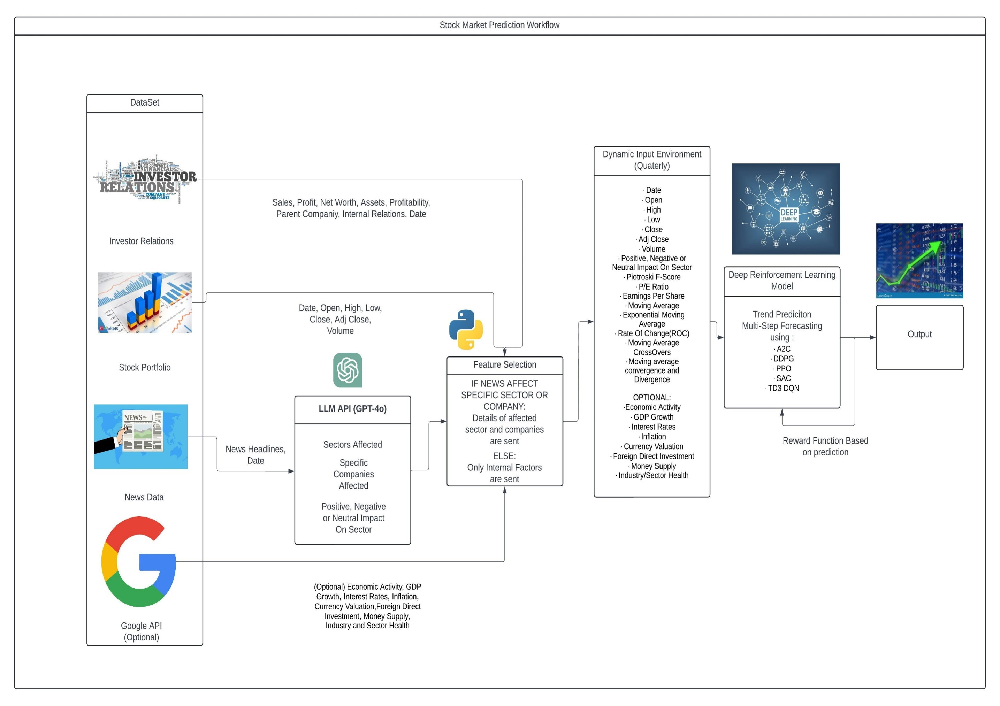
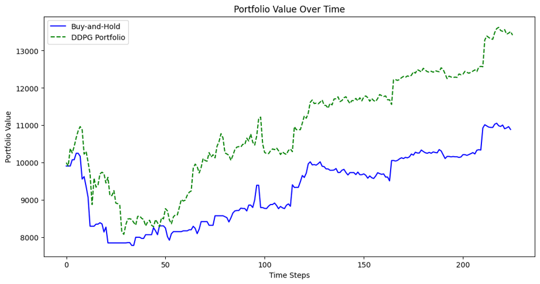

NEAT-DDPG: Intelligent Stock Forecasting
Team & Guide
Guide: Ms. Anisha Radhakrishnan
- Arvind Palani – CB.EN.U4CSE21107
- Harinandan DN – CB.EN.U4CSE21114
- Selvakumaran Kannan – CB.EN.U4CSE21126
- Moin Ashwath – CB.EN.U4CSE21136
Objective
This project aims to develop an intelligent stock forecasting model that combines company stock metrics, news sentiment, and macroeconomic indicators using an advanced reinforcement learning strategy. The goal is to generate high-accuracy, risk-adjusted forecasts with an adaptive, multi-step policy using Deep Deterministic Policy Gradient (DDPG) improved by NEAT (NeuroEvolution of Augmenting Topologies).
Problem Statement
Traditional stock prediction methods often fail to capture market volatility and non-linearity. This project addresses that by using reinforcement learning and neuroevolution techniques to predict stock trends using multimodal data inputs like financial reports, news sentiment, and technical indicators.
Proposed System Architecture
The architecture is composed of data ingestion modules, sentiment analysis layers, NEAT-driven topology generation, and the DDPG policy learner. NEAT dynamically evolves the structure of the policy network over training episodes.

Work Done
- Enhanced dataset with 20+ technical stock indicators and sentiment scores.
- Refined reward function to better reflect real-world trading objectives and constraints.
- Expanded evaluation metrics: Sharpe ratio, MDD, and annualized return/volatility.
- Integrated NEAT over DDPG to evolve the policy network during training.
Reward Function Design
- Maximize Returns: Reward = Net profit/loss at each timestep.
- Include Transaction Costs: Penalize high-volume trades for realism.
- Sharpe Ratio: Adjust for risk using standard deviation of returns.
- Time Preference: Discount future rewards using γ (gamma).
- Market Realism: Integrate liquidity constraints and market impacts.
Model Insights
- DDPG trained with NEAT-based evolving networks
- Reward function balances returns, drawdown, volatility
- Explained using SHAP for transparency
- Evaluated on Sharpe, Return, Volatility
Comparative Model Performance
- DDPG: High returns but unstable in volatile environments.
- TD3: Tackled overestimation but required more compute.
- SAC: Stable with lower variance but reduced profitability.
- A2C: Underperformed due to its on-policy nature.
Best RL Baseline (TD3/DDPG):
- Sharpe Ratio: 1.47 (TD3)
- Max Drawdown: -10.87%
- Annualized Return: ~41% (DDPG)
Buy-and-Hold Strategy:
- Sharpe Ratio: 0.58
- Max Drawdown: -22.4%
- Annualized Return: 7.6%
- Volatility: 15.2%
📈 Performance Summary
Sharpe Ratio
2.04
+252% vs Buy-and-Hold
+39% vs TD3
Max Drawdown
-10.5%
53% less than Buy-and-Hold
3.4% better than TD3
Annualized Return
19.4%
+155% vs Buy-and-Hold
Stable vs DDPG
Volatility
12.8%
-16% vs Buy-and-Hold
Results & Analysis
- NEAT-DDPG showed superior Sharpe Ratio (2.0–3.0 range).
- Lower max drawdown, implying reduced risk exposure.
- Outperformed Buy-and-Hold in returns, consistency, and volatility.

Demo & Dataset Insights
The model was trained using a rich dataset of stock prices, sentiment scores from financial news, and macroeconomic trends. A preview of data and sample NEAT configuration file was shared during the demo.
Demo Files & Links
Conference Submission
This project has been submitted to the 5th International Conference on Advanced Computational and Communication Paradigm (ICACCP).
🔗 View Conference Details
References
- K. Taylor & J. Ng, "NLP and Multimodal Stock Prediction," arXiv:2401.01487
- A. Mohammadshafie et al., "Deep RL in Finance," CSCI 2024
- T. Kabbani & E. Duman, "Trading Automation via DRL," arXiv:2208.07165
- A. Jain et al., "Hybrid Stock Forecasting with EA," IEEE Access, 2020
- J. Zhang et al., “LLM-based Stock Prediction,” IEEE CI, 2023
- P. Sharma & A. Gupta, "NIFTY News Dataset for LLMs," IEEE TKDE, 2022
Conclusion
Our approach using NEAT-enhanced DDPG offers an innovative, adaptive strategy for stock trend forecasting. It balances profitability, risk, and realism, making it a practical solution for real-world trading applications.